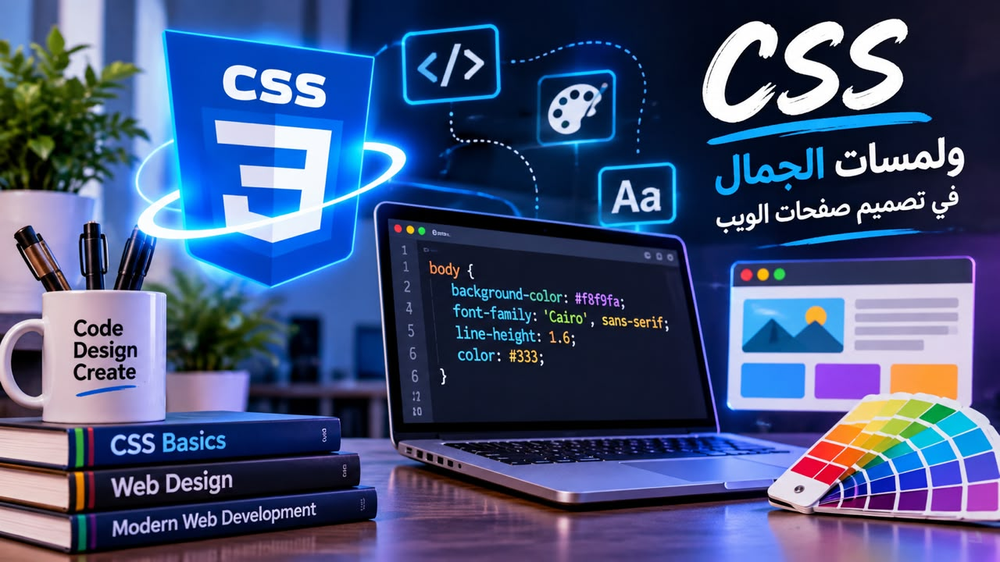

اسم الطالب : زهراء مجدي الشحات سعد
الرقم الجامعي : 2503795
المقرر الدراسي : تطبيقات الانترنت والمنصات الالكترونيه
اصبحت صفحات الويب من الوسائل المهمه لعرض المعلومات وتقديم الخدمات عبر الانترنت ولم يعد تصميم صفحات الويب يقتصر علي كتابه النصوص واضافه الصور فقط،بل يشمل تنسيق الألوان والخطوط والخلفيات وتنظيم العناصر بطريقه واضحه وجذابه
ومن هنا ظهرت اهميه لغه cssالتي تستخدم في تنسيق صفحات الويب ونحسين مظهرها .
لغه cssهي اختصار لعباره cascading style sheets وتعني أوراق الانماط المتتاليه وهي لغه تستخدم لتحديد الشكل والتنسيق البصري لعناصر صفحات الويب مثل الألوان والخطوط والخلفيات والحدود والمسافات وطريقه توزيع العناصر داخل الصفحه .
وتعمل cssبالتعاون مع htmlحيث تستخدم htmlلبناء هيكل الصفحه وتحديد عناصرها بينما تستخدم cssلتنسيق هذه العناصر والتحكم في مظهرها .
تعد لغه cssلغه الديكور الأساسيه التي تحول صفحات الويب من مجرد نصوص وهياكل جافه الي لوحات فنيه تفاعليه تجذب المستخدمين وتوفر لهم تجربه تصفح ممتعه .

تمنح cssالمطورين القدره الكامله علي تلوين صفحات الويب وتنسيق خلفياتها.
ومن اهم خصائص الالوان في css:
ويمكن كتابه الألوان باستخدام أسمائها مثل الاحمر والأزرق او باستخدام نظامي hex and RGB
p{color :red}
يؤدي هذا التنسيق الي جعل نصوص الفقرات باللوت الأحمر
المثال التاني :Body{background -color #ff9500}
ويحدد هذا المثال خلفيه عنصر body باستخدام قيمه لونيه مكتوبه بالنظام Hex.
يمكن اضافه خلفيات ملونه او صور ثابته ومتحركه بجانب إمكانيه دمج الألوان عبر التدرجات gradients التي تعطي عمقاًوجمالاً عصرياً للصميم .
ويمكن التحكم في لون خلفيه الصفحه أو خلفيه عنصر معين باستخدام خاصيه background -color.
النص هو وسيله التواصل الأولي للمسخدم وبدون نسيق جيد قد ينفر الزائر من الموقع وهنا تدخل css.
ومن اهم الخصائص في تنسيق الخطوط والنصوص في css:
وتساعد هذه الخصائص علي تنظيم النصوص وتحسين سهوله قراءتها مما يجعل النص أكثر وضوحاً.
h1 {font-size:32px;
text -aligin 1:center
}
p{font-family:Arial;
line -hight:1.6
}
في المثال السابق تم تحديد حجم العنوان ومحاذاته ،وتم تحديد نوع الخط وارتفاع الاسطر.
الجمال لايكمل إلا بنظام وتوفر cssأدوات قويه لتنظيم وتوزيع العناصر علي الشاشه .
باستخدام تقنيات حديثه مثل flexboxو css,gridويمكن تدرتيب العناصر في أعمده وصفوف متناسقه بسهوله .
مثال :
container {display :flex; gap:
20x;justify -content :
space -between}
يوضح هذا الكود تنظيم العناصر بجانب بعضها ويتحكم في المسافات بينها وتوزيعها داخل الصفحه .
يتحكم في المسافات الداخليه وتوضيح الفواصل وإنشاء تصميم منظم.
ومن أهم الخصائص:
مثال :
box{border :2px solid black ;
margin :20 px ;padding:10 px }
يوضح هذا الكود التحكم في حدود العنصر والمسافه الداخليه والخارجيه الخاصه به.
لم تعد الجاذبيه مقتصره علي الأشكال الثابته بل تمتد الي كيفيه تفاهل الموقع مع المستخدم والاجهزه .
| الخاصيه | وظيفتها |
|---|---|
| color | تحديد لون العنصر |
| background-color | تحديد لون الخلفيه | font -size | تحديد حجم الخط |
| text -algin | تحديد محاذاه النص |
| Border | اضافه حدود العنصر |
| margin | تحديد المسافه الخارجيه |
| padding | تحديد المسافه الداخليه |
تعد cssمن اللغات الأساسيه في تصميم صفحات الويب إذ تتيح التحكم في الالوان والخلفيات والخطوط والحدود والمسافات وتوزيع العناصر كما تستعد علي تنظيم التنسيقات وفصلها عن محتوي الصفحه مما يجعل تعديل التصميم اكثر سهوله ،ويؤدي استخدامcssمع htmlالي انشاء صفحات الويب أكثر تنظيماً وجاذبيه مع امكانيه تحسين طريقه عرضها علي أحجام الشاشات المختلفه .